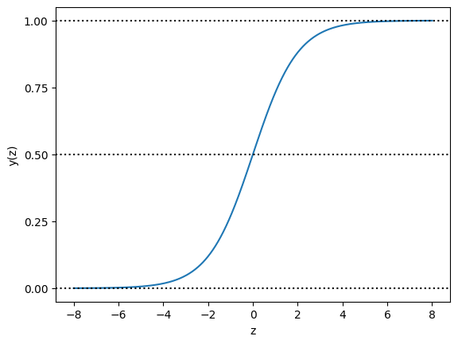

import numpy as np
def sigmoid(input):
return 1.0 / (1 + np.exp(-input))Logistic Regression and Support Vector Machine classifier
1. Logistic Regression
The logistic function (which is more commonly called sigmoid function) basically maps an input to an output of values between 0 and 1. And it is defined as follows: \[y(z) = \frac{1}{1+ exp(-z)}\]
We can visualize it as follows:
First define the logistic function:
# Input variables from -8 to 8, and the output correspondingly:
z = np.linspace(-8, 8, 1000)
y = sigmoid(z)
import matplotlib.pyplot as plt
plt.plot(z, y)
plt.axhline(y=0, ls='dotted', color='k')
plt.axhline(y=0.5, ls='dotted', color='k')
plt.axhline(y=1, ls='dotted', color='k')
plt.yticks([0.0, 0.25, 0.5, 0.75, 1.0])
plt.xlabel('z')
plt.ylabel('y(z)')
plt.show()
In the S-shaped curve, all inputs are transformed into the range from 0 to 1. For positive inputs, a greater value results in an output closer to 1; for negative inputs, a smaller value generates an output closer to 0; when the input is 0, the output is the midpoint 0.5.
Logistic regression, by default, is limited to two-class classification problems. It cannot be used for classification tasks that have more than two class labels, so-called multi-class classification. Instead, it requires modification to support multi-class classification problems.
The multinomial logistic regression (often just called ‘multinomial regression’) algorithm is an extension to the logistic regression model that involves changing the loss function to cross-entropy loss and predict probability distribution to a multinomial probability distribution to natively support multi-class classification problems.
2. Support Vector Machine
Support Vector Machines (or SVM) seek a line that best separates two classes. Those data instances that are closest to the line that best separates the classes are called support vectors and influence where the line is placed. SVM has been extended to support multiple classes.Of particular importance is the use of different kernel functions via the kernel parameter.
Kernels can be used that transform the input space into higher dimensions such as a Polynomial Kernel and a Radial Kernel. This is called the Kernel Trick. It is desirable to use more complex kernels as it allows lines to separate the classes that are curved or even more complex. This in turn can lead to more accurate classifiers.
Stratified k-fold cross-validation is a technique used to evaluate the performance of machine learning models, particularly in classification tasks, where the target class distribution may be imbalanced. In this method, the dataset is divided into ‘k’ equally sized folds, ensuring that each fold maintains a similar distribution of class examples as the entire dataset. This stratification process helps to reduce the bias and variance in model performance estimation by preventing a skewed distribution of classes in the train and test sets.
During the cross-validation process, the model is trained on ‘k-1’ folds and tested on the remaining fold, iterating this process ‘k’ times. Each iteration uses a different fold for testing, and the average performance metric (e.g., accuracy) is calculated over all iterations.
Here’s a code example using the scikit-learn library:
from sklearn.model_selection import StratifiedKFold
from sklearn.datasets import load_iris
from sklearn.linear_model import LogisticRegression
from sklearn.preprocessing import OneHotEncoder
import numpy as np
# Load the dataset
iris = load_iris()
X, y = iris.data, iris.target
# Initialize stratified k-fold cross-validation
skf = StratifiedKFold(n_splits=5) # Set the number of folds to 5
# Initialize the logistic regression model
model = LogisticRegression(solver='lbfgs', max_iter=1000)
# Perform stratified k-fold cross-validation
accuracy_scores = []
for train_index, test_index in skf.split(X, y):
X_train, X_test = X[train_index], X[test_index]
y_train, y_test = y[train_index], y[test_index]
model.fit(X_train, y_train)
accuracy = model.score(X_test, y_test)
accuracy_scores.append(accuracy)
# Calculate the mean accuracy
mean_accuracy = np.mean(accuracy_scores)
print("Mean accuracy:", mean_accuracy)Mean accuracy: 0.9733333333333334In this example, we use the Iris dataset and a logistic regression model to demonstrate stratified k-fold cross-validation with 5 folds. The performance of the model is evaluated using accuracy as the performance metric, and the mean accuracy is reported.
Stratified cross-validation is particularly useful when dealing with imbalanced datasets, where some classes have significantly fewer examples compared to others. In such cases, using standard cross-validation might lead to situations where one or more folds contain very few or even none of the underrepresented class instances. This could result in an inaccurate and biased performance estimation of the model, as the model is not adequately tested on all classes.
For balanced datasets, where class distributions are roughly equal, stratified cross-validation may not provide significant benefits over standard cross-validation. However, it is still a good practice to use stratified cross-validation as a default approach, as it generally leads to more stable and reliable performance estimates.
Evaluation Metrics: Provide mean weighted F1 scores and a confusion matrix to evaluate and compare the performance of the classification models.
Here is an example code how to compute mean weighted F1 score in k-fold cross-validation setting:
f1_scores = []
# Perform k-fold stratified cross-validation
for train_index, test_index in cv.split(X, y):
X_train, X_test = X[train_index], X[test_index]
y_train, y_test = y[train_index], y[test_index]
# Necessary code to compute the predictions using your classifier..
#...
# y_pred = ...
# Compute the weighted-average F1-score for this fold
fold_f1_score = f1_score(y_test, y_pred, average='weighted')
f1_scores.append(fold_f1_score)
# Calculate the mean F1-score across all folds
mean_weighted_f1_score = np.mean(f1_scores)
print("Mean weighted-average F1-score across", k, "folds:", mean_weighted_f1_score)--------------------------------------------------------------------------- NameError Traceback (most recent call last) <ipython-input-6-f45df9fe7738> in <cell line: 4>() 2 3 # Perform k-fold stratified cross-validation ----> 4 for train_index, test_index in cv.split(X, y): 5 X_train, X_test = X[train_index], X[test_index] 6 y_train, y_test = y[train_index], y[test_index] NameError: name 'cv' is not defined
Submissions
After training your models with the data in train.csv, use the given test.csv data for your predictions (predicted ‘type’ values); save it as csv file, and upload it to the Kaggle competition. Furthermore, you are supposed to upload your coding in Jupyter notebook to the department’s submission system.
Kaggle competition for logistic regression: https://www.kaggle.com/t/1aad2bcbe8c14b80918ec67ef7041c9b
Kaggle competition for support vector machine: https://www.kaggle.com/t/f4f6aee930674ea3a86aada32d861cfa
Due Date: 30.04.2023
Note: The late submission rules previously announced from the piazza apply.
Assignment
In this assignment, you are given a dataset comprising information about dinosaurs. You will use logistic regression and support vector machine models to predict the type of dinosaur based on the provided information. In this assignment, you may utilize built-in libraries. Employ stratified k-fold cross-validation (CV) with 10 folds for evaluating the classification models. Stratification ensures that each CV fold maintains a similar distribution of class examples as the entire training set. You can design various experiments by selecting some/all information provided in the dataset. Here, we expect the best result you obtained after these experiments and observations. Please explicitly mention your feature selection method in your report while presenting results.
Your Work
#Include your codes below by including as many cells as necessary to clearly demonstrate your work
#Please write your codes in separate sections for data pre-processing, Logistic Regression and SVM models etc.Upload data
import pandas as pd
from sklearn.model_selection import train_test_split
from sklearn.linear_model import LogisticRegression
from sklearn.model_selection import StratifiedKFold
from sklearn.svm import SVC
from sklearn.metrics import accuracy_score
import itertools
import warnings
warnings.filterwarnings("ignore")
data = pd.read_csv('train.csv')
data_clone = data.copy()Data Pre-Processing
print(data.columns.tolist())
print(pd.get_dummies(data[['species']]).shape) #unique bundan hic olmaz----
print(pd.get_dummies(data[['taxonomy']]).shape) #looks like unique but we may work on it
print(pd.get_dummies(data[['lived_in']]).shape) #good
print(pd.get_dummies(data[['diet']]).shape) #good
print(pd.get_dummies(data[['length']]).shape) #good
print(pd.get_dummies(data[['period']]).shape) #looks like unique but we may work on it
print(pd.get_dummies(data[['name']]).shape) #unique bundan da hic olmaz----
print(pd.get_dummies(data[['type']]).shape) #target['id', 'name', 'diet', 'period', 'lived_in', 'type', 'length', 'taxonomy', 'named_by', 'species', 'link']
(246, 224)
(246, 92)
(246, 30)
(246, 4)
(246, 64)
(246, 127)
(246, 246)
(246, 6)data_clone = data_clone.drop('link', axis=1)
data_clone = data_clone.drop('species', axis=1)
data_clone = data_clone.drop('name', axis=1)
data_clone = data_clone.drop('named_by', axis=1)
data_clone = data_clone.drop('id', axis=1)print(data_clone.isnull().sum())
data_clone['length'] = data_clone['length'].str.replace('m','').astype(float) #length parametresini duzelt
data_clone['length']diet 0
period 0
lived_in 0
type 0
length 13
taxonomy 0
dtype: int640 NaN
1 5.15
2 12.00
3 21.00
4 10.00
...
241 NaN
242 3.00
243 0.80
244 7.60
245 12.00
Name: length, Length: 246, dtype: float64# length in this part we fill null values with before nonnull value and it is not quite good technic.
filled_data = data_clone.groupby('lived_in', group_keys=False).apply(lambda x: x.fillna({'length': x['length'].bfill()}))
# So i decided to fill null values with mean of nonnull values of lived_in. So group by lived_in and fill length with its mean
length_filled_data = data_clone.groupby('lived_in' , group_keys=False).apply(lambda x: x.fillna({'length': x['length'].fillna(x['length'].mean())}))
data_clone['length'] = length_filled_data['length'].round().astype(int)
# burda ise aynisini bu sefer lived_in verisinin meani ile dolduruyoruz
# bu kod typelara gore guruplayip null length degerleri bir onceki degerle dolduruyor#period data has to be handled!!
data_periodic = data_clone['period'].str.split(' ').str[0] +' ' + data_clone['period'].str.split(' ').str[1]
#time periodic data
data_time_zone = data_clone['period'].str.split(' ').str[2].str.split('-').str[0] + ' ' +data_clone['period'].str.split(' ').str[2].str.split('-').str[1]
droped_null_time_zone = data_clone['period'].str.split(' ').str[2].str.split('-')
data_time_zone1 = round((droped_null_time_zone.str[0].astype(float).fillna(0)).astype(int), -1)
data_time_zone2 = round((droped_null_time_zone.str[1].astype(float).fillna(0)).astype(int), -1)
data_time_zone[data_time_zone2 != 0] = (data_time_zone1 + data_time_zone2)//2
data_time_zone[data_time_zone2 == 0] = data_time_zone1
data_clone['period'] = data_time_zone
grouped_mean = (((data_clone.groupby(data_periodic)['period'].mean()).astype(int)/5).round() *5).astype(int)
mask = (data_clone['period'] == 0)
indices = data_clone.loc[mask].index
data_clone.loc[indices, 'period'] = grouped_mean[data.loc[indices, 'period']].values
data_clone['period_name'] = data_periodic
data_clone
#period is good now| diet | period | lived_in | type | length | taxonomy | period_name | |
|---|---|---|---|---|---|---|---|
| 0 | carnivorous | 215 | United Kingdom | small theropod | 7 | Dinosauria | Late Triassic |
| 1 | herbivorous/omnivorous | 215 | Argentina | sauropod | 5 | Dinosauria Saurischia Sauropodomorpha Prosauro... | Late Triassic |
| 2 | herbivorous | 75 | China | euornithopod | 12 | Dinosauria Ornithischia Genasauria Cerapoda Or... | Late Cretaceous |
| 3 | herbivorous | 65 | USA | sauropod | 21 | Dinosauria Saurischia Sauropodomorpha Sauropod... | Late Cretaceous |
| 4 | herbivorous | 125 | United Kingdom | euornithopod | 10 | Dinosauria Ornithischia Genasauria Cerapoda Or... | Early Cretaceous |
| ... | ... | ... | ... | ... | ... | ... | ... |
| 241 | herbivorous | 110 | Mongolia | armoured dinosaur | 4 | Dinosauria Ornithischia Genasauria Thyreophora... | Early Cretaceous |
| 242 | herbivorous | 110 | Australia | euornithopod | 3 | Dinosauria Ornithischia Genasauria Cerapoda Or... | Early Cretaceous |
| 243 | carnivorous | 120 | China | small theropod | 1 | Dinosauria Saurischia Theropoda Neotheropoda T... | Early Cretaceous |
| 244 | carnivorous | 70 | Argentina | large theropod | 8 | Dinosauria Saurischia Theropoda Neotheropoda C... | Late Cretaceous |
| 245 | omnivorous | 225 | South Africa | sauropod | 12 | Dinosauria Saurischia Sauropodomorpha Prosauro... | Late Triassic |
246 rows × 7 columns
# taxonomy has to be handled
taxonomy_data = (data_clone['taxonomy'].str.split(' ').str[0] + " " +data_clone['taxonomy'].str.split(' ').str[1] + " " +data_clone['taxonomy'].str.split(' ').str[2]+ " " +data_clone['taxonomy'].str.split(' ').str[3]).fillna(method='bfill')
data_clone['taxonomy'] = taxonomy_data
# sadece taxonomy verisinin ilk 4 kismini kullanacam ilk 4 kismi olmayan verileri bir onceki veri ile doldurudumprint(data_clone.columns.to_list())
print(data.columns.to_list())['diet', 'period', 'lived_in', 'type', 'length', 'taxonomy', 'period_name']
['id', 'name', 'diet', 'period', 'lived_in', 'type', 'length', 'taxonomy', 'named_by', 'species', 'link']print('taxonomy', pd.get_dummies(data[['taxonomy']]).shape , pd.get_dummies(data_clone[['taxonomy']]).shape, sep=' ---> ')
print('lived_in', pd.get_dummies(data[['lived_in']]).shape,(pd.get_dummies(data_clone[['lived_in']]).shape) , sep=' ---> ')
print('diet', pd.get_dummies(data[['diet']]).shape,(pd.get_dummies(data_clone[['diet']]).shape) , sep=' ---> ')
print('length', pd.get_dummies(data[['length']]).shape,(pd.get_dummies(data_clone[['length']]).shape) , sep=' ---> ')
print('period', pd.get_dummies(data[['period']]).shape,(pd.get_dummies(data_clone[['period']]).shape) , sep=' ---> ')
print('new feature period_name ', pd.get_dummies(data_clone[['period_name']]).shape , sep='---> ')
print('target feature type ', pd.get_dummies(data_clone[['type']]).shape , sep='---> ')taxonomy ---> (246, 92) ---> (246, 6)
lived_in ---> (246, 30) ---> (246, 30)
diet ---> (246, 4) ---> (246, 4)
length ---> (246, 64) ---> (246, 1)
period ---> (246, 127) ---> (246, 34)
new feature period_name ---> (246, 6)
target feature type ---> (246, 6)Test Data Preprocesing
test_data = pd.read_csv('test.csv')
features = ['id','diet', 'period', 'lived_in', 'length', 'taxonomy']
target = 'type'
test_copy = test_data[features]
#fix the taxonomy parameter of test data
taxonomy_data_test = (test_copy['taxonomy'].str.split(' ').str[0] + " " +test_copy['taxonomy'].str.split(' ').str[1] + " " +test_copy['taxonomy'].str.split(' ').str[2]+ " " +test_copy['taxonomy'].str.split(' ').str[3]).fillna(method='bfill')
test_copy['taxonomy'] = taxonomy_data_test
#fix the lived_in parameter of test data
test_copy['lived_in'].fillna(test_copy['period'], inplace=True)
#fix the period parameter of test data
data_periodic_test = test_copy['period'].str.split(' ').str[0] +' ' + test_copy['period'].str.split(' ').str[1]
test_copy['period_name'] = data_periodic_test
test_copy['period_name'] = test_copy.groupby('taxonomy')['period_name'].transform(lambda x: x.fillna(x.mode()[0]))
data_time_zone_test = test_copy['period'].str.split(' ').str[2].str.split('-').str[0] + ' ' +test_copy['period'].str.split(' ').str[2].str.split('-').str[1]
droped_null_time_zone = test_copy['period'].str.split(' ').str[2].str.split('-')
data_time_zonex = round((droped_null_time_zone.str[0].astype(float).fillna(0)).astype(int), -1)
data_time_zoney = round((droped_null_time_zone.str[1].astype(float).fillna(0)).astype(int), -1)
data_time_zone_test[data_time_zoney != 0] = (data_time_zonex + data_time_zoney)//2
data_time_zone_test[data_time_zoney == 0] = data_time_zonex
test_copy['period'] = data_time_zone_test
grouped_mean_test = (((test_copy.groupby(data_periodic_test)['period'].mean()).astype(int)/5).round() *5).astype(int)
mask = (test_copy['period'] == 0)
indices = test_copy.loc[mask].index
test_copy.loc[indices, 'period'] = grouped_mean_test[test_copy.loc[indices, 'period_name']].values
test_copy['period_name'] = data_periodic_test
#fix the length parameter of test data
test_copy['length'] = test_copy['length'].str.replace('m','').astype(float)
filled_test_copy = test_copy.groupby('taxonomy' , group_keys=False).apply(lambda x: x.fillna({'length': x['length'].fillna(x['length'].mean())}))
test_copy['length'] = filled_test_copy['length'].round()Logistic Regression
#test of features that is true combination for Logistic Regression
features = ['diet', 'period', 'lived_in', 'length', 'taxonomy', 'period_name']
target = 'type'
X = data_clone[features]
y = data_clone[target]
biggest_subset = 0
biggest_accuracy = 0
for n_features in range(len(features), 0, -1):
for feature_comb in itertools.combinations(features, n_features):
X_comb = pd.get_dummies(X[list(feature_comb)])
#stratified k-fold cross-validation (CV) with 10 folds
skf = StratifiedKFold(n_splits=10, shuffle=True, random_state=10)
model = LogisticRegression()
acc_list = []
for train_idx, test_idx in skf.split(X_comb, y):
X_train, y_train = X_comb.iloc[train_idx], y.iloc[train_idx]
X_test, y_test = X_comb.iloc[test_idx], y.iloc[test_idx]
model.fit(X_train, y_train)
accuracy = model.score(X_test, y_test)
acc_list.append(accuracy)
avg_accuracy = sum(acc_list) / len(acc_list)
if biggest_accuracy < avg_accuracy:
biggest_accuracy = avg_accuracy
biggest_subset = feature_comb
#print(f"Features: {list(feature_comb)}, Mean Accuracy: {sum(acc_list)/len(acc_list):.3f}")
print(f"Features: {biggest_subset} - Average Accuracy: {biggest_accuracy}")Features: ('diet', 'period', 'lived_in', 'length', 'taxonomy') - Average Accuracy: 0.866test_copy[['diet', 'period', 'lived_in', 'length', 'taxonomy']].isnull().sum()
test_clone_for_lr = test_copy[['id','diet', 'period', 'lived_in', 'length', 'taxonomy']]
features = ['diet', 'period', 'lived_in', 'length', 'taxonomy']
target = 'type'
X = data_clone[features]
y = data_clone[target]
X_test = pd.get_dummies(test_clone_for_lr[features])
X_comb = pd.get_dummies(X)
test_copy_encoded = pd.get_dummies(test_clone_for_lr[features])
X_test = test_copy_encoded.reindex(columns = X_comb.columns, fill_value=0)
model = LogisticRegression()
model.fit(X_comb.values, y.values)
accuracy = model.score(X_comb, y)
print(f"Accuracy for trained data: {accuracy:.3f}")
y_pred = model.predict(X_test)
test_clone_for_lr[target] = y_pred
test_clone_for_lr[['id','diet', 'period', 'lived_in', 'length', 'taxonomy', 'type']].info()Accuracy for trained data: 0.943
<class 'pandas.core.frame.DataFrame'>
RangeIndex: 62 entries, 0 to 61
Data columns (total 7 columns):
# Column Non-Null Count Dtype
--- ------ -------------- -----
0 id 62 non-null int64
1 diet 62 non-null object
2 period 62 non-null object
3 lived_in 62 non-null object
4 length 62 non-null float64
5 taxonomy 62 non-null object
6 type 62 non-null object
dtypes: float64(1), int64(1), object(5)
memory usage: 3.5+ KBlr_predicts = pd.DataFrame(test_clone_for_lr[['id', 'type']])
lr_predicts.columns = ['id', 'type']
lr_predicts.to_csv('prediction_lr.csv', index=False)Support Vector Machine
#test of features that is true combination for Support Vector Machine
features = ['diet', 'period', 'lived_in', 'length', 'taxonomy', 'period_name']
target = 'type'
X = data_clone[features]
y = data_clone[target]
biggest_subset = itertools.combinations(features, 1)
biggest_accuracy = 0
for i in range(len(features), 0, -1):
for subset in itertools.combinations(features, i):
X_sub = pd.get_dummies(X[list(subset)])
#stratified k-fold cross-validation (CV) with 10 folds
skf = StratifiedKFold(n_splits=10, shuffle=True, random_state=10)
model = SVC(kernel='rbf')
accuracy_list = []
for train_idx, test_idx in skf.split(X_sub, y):
X_train, y_train = X_sub.iloc[train_idx], y.iloc[train_idx]
X_test, y_test = X_sub.iloc[test_idx], y.iloc[test_idx]
model.fit(X_train, y_train)
y_pred = model.predict(X_test)
accuracy = accuracy_score(y_test, y_pred)
accuracy_list.append(accuracy)
avg_accuracy = sum(accuracy_list) / len(accuracy_list)
if biggest_accuracy < avg_accuracy:
biggest_accuracy = avg_accuracy
biggest_subset = subset
#print(f"Features: {subset} - Average Accuracy: {avg_accuracy}")
print(f"Features: {biggest_subset} - Average Accuracy: {biggest_accuracy}")Features: ('diet', 'lived_in', 'taxonomy') - Average Accuracy: 0.7679999999999999test_copy[['diet', 'period', 'lived_in', 'length', 'taxonomy']].isnull().sum()
test_clone_for_svm = test_copy[['id', 'diet', 'period', 'lived_in', 'length', 'taxonomy']]
features = ['diet', 'lived_in', 'taxonomy']
target = 'type'
X = data_clone[features]
y = data_clone[target]
X_test = pd.get_dummies(test_clone_for_svm[features])
X_comb = pd.get_dummies(X)
test_copy_encoded = pd.get_dummies(test_clone_for_svm[features])
X_test = test_copy_encoded.reindex(columns = X_comb.columns, fill_value=0)
model = SVC(kernel='rbf')
model.fit(X_comb.values, y.values)
accuracy = model.score(X_comb, y)
print(f"Accuracy for trained data: {accuracy:.3f}")
y_pred = model.predict(X_test)
test_clone_for_svm[target] = y_pred
test_clone_for_svm[['id', 'diet', 'lived_in', 'taxonomy', 'type']]Accuracy for trained data: 0.825| id | diet | lived_in | taxonomy | type | |
|---|---|---|---|---|---|
| 0 | 1 | herbivorous | Romania | Dinosauria Saurischia Sauropodomorpha Sauropoda | sauropod |
| 1 | 2 | herbivorous | USA | Dinosauria Saurischia Sauropodomorpha Sauropoda | sauropod |
| 2 | 3 | carnivorous | USA | Dinosauria Saurischia Theropoda Neotheropoda | large theropod |
| 3 | 4 | carnivorous | USA | Dinosauria Saurischia Theropoda Neotheropoda | large theropod |
| 4 | 5 | omnivorous | USA | Dinosauria Saurischia Theropoda Neotheropoda | large theropod |
| ... | ... | ... | ... | ... | ... |
| 57 | 58 | herbivorous | China | Dinosauria Saurischia Sauropodomorpha Sauropoda | sauropod |
| 58 | 59 | herbivorous | Mongolia | Dinosauria Ornithischia Genasauria Thyreophora | armoured dinosaur |
| 59 | 60 | carnivorous | Morocco | Dinosauria Saurischia Theropoda Neotheropoda | large theropod |
| 60 | 61 | herbivorous | Canada | Dinosauria Ornithischia Genasauria Cerapoda | ceratopsian |
| 61 | 62 | herbivorous | Canada | Dinosauria Ornithischia Genasauria Cerapoda | ceratopsian |
62 rows × 5 columns
svm_predicts = pd.DataFrame(test_clone_for_svm[['id', 'type']])
svm_predicts.columns = ['id', 'type']
svm_predicts.to_csv('prediction_svm.csv', index=False)